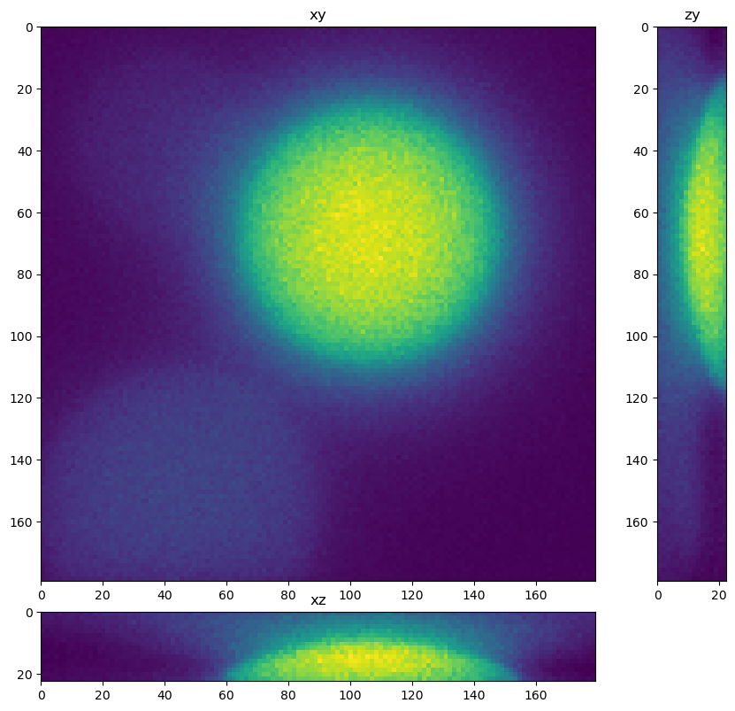
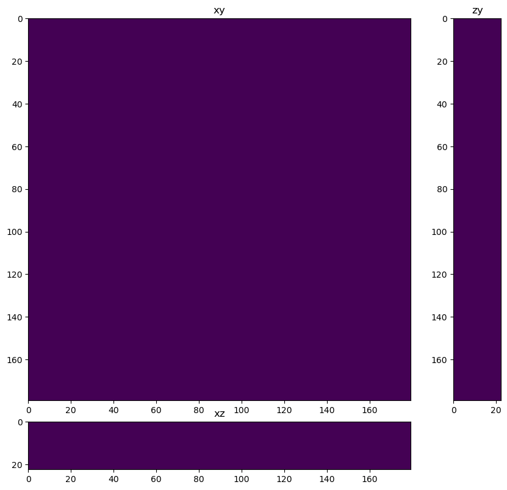
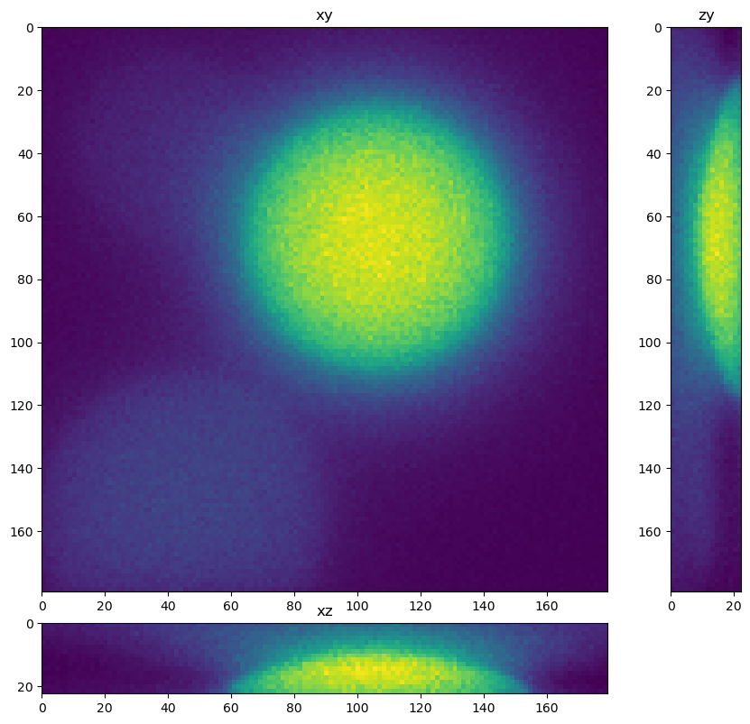
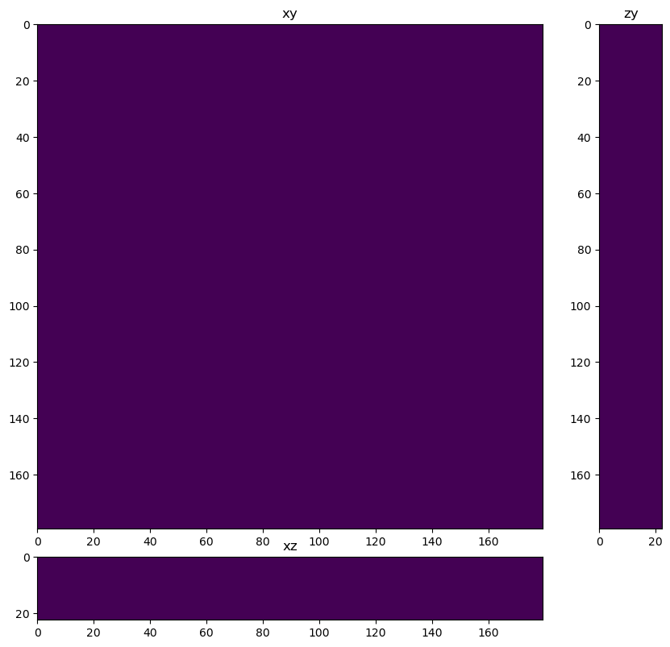

Train a stardist neural network for segmentation#
from skimage.io import imread, imsave
from tnia.plotting.projections import show_xyz_slice, show_xyz_max, show_xy_zy_max
from random import randint
import numpy as np
import os
from skimage.measure import label
from stardist import calculate_extents
Get the list of visible devices and confirm that GPU is available#
… or else training will take a long time
import tensorflow as tf
visible_devices = tf.config.list_physical_devices()
print(visible_devices)
[PhysicalDevice(name='/physical_device:CPU:0', device_type='CPU'), PhysicalDevice(name='/physical_device:GPU:0', device_type='GPU')]
Define model path#
This is the path where the model will be saved, change to be local to your machine
parent_dl_path=get_parent_dl_path()
model_path = os.path.join(parent_dl_path, r'models')
print(model_path)
patches_path = os.path.join(parent_dl_path, r'patches')
print(patches_path)
---------------------------------------------------------------------------
NameError Traceback (most recent call last)
c:\Users\bnort\work\ImageJ2022\tnia\deconvolution-gpu-dl-course\docs\30_deep_learning\30_stardist.ipynb Cell 6 line 1
----> <a href='vscode-notebook-cell:/c%3A/Users/bnort/work/ImageJ2022/tnia/deconvolution-gpu-dl-course/docs/30_deep_learning/30_stardist.ipynb#W5sZmlsZQ%3D%3D?line=0'>1</a> parent_dl_path=get_parent_dl_path()
<a href='vscode-notebook-cell:/c%3A/Users/bnort/work/ImageJ2022/tnia/deconvolution-gpu-dl-course/docs/30_deep_learning/30_stardist.ipynb#W5sZmlsZQ%3D%3D?line=1'>2</a> model_path = os.path.join(parent_dl_path, r'models')
<a href='vscode-notebook-cell:/c%3A/Users/bnort/work/ImageJ2022/tnia/deconvolution-gpu-dl-course/docs/30_deep_learning/30_stardist.ipynb#W5sZmlsZQ%3D%3D?line=2'>3</a> print(model_path)
NameError: name 'get_parent_dl_path' is not defined
Load the corrupted images and ground truth images#
corrupted_dir = r"D:\images\deep-learning\big_spheres\train\images"
ground_truth_dir = r"D:\images\deep-learning\big_spheres\train\ground truth"
corrupted_files = os.listdir(corrupted_dir)
ground_truth_files = os.listdir(ground_truth_dir)
# Preprocess the images
X = []
Y = []
for i in range(len(corrupted_files)):
# Load the corrupted image and ground truth image
corrupted_img = imread(os.path.join(corrupted_dir, corrupted_files[i]), plugin='tifffile')
ground_truth_img = imread(os.path.join(ground_truth_dir, ground_truth_files[i]), plugin='tifffile')
# Resize the images to the desired size
#corrupted_img = np.reshape(corrupted_img, (256, 256, 100, 1))
#ground_truth_img = np.reshape(ground_truth_img, (256, 256, 100, 1))
corrupted_img = corrupted_img[..., np.newaxis]
ground_truth_img = ground_truth_img[..., np.newaxis]
print(corrupted_img.min(), corrupted_img.max())
print(ground_truth_img.min(), ground_truth_img.max())
# Normalize the pixel values to [0, 1]
corrupted_img = (corrupted_img.astype('float32')-corrupted_img.min()) / (corrupted_img.max() - corrupted_img.min())
#ground_truth_img = (ground_truth_img.astype('float32')-ground_truth_img.min()) / (ground_truth_img.max() - ground_truth_img.min())
# Append the preprocessed images to the training set
X.append(corrupted_img)
Y.append(ground_truth_img)
X = np.array(X)
Y = np.array(Y)
X = X.squeeze()
Y = Y.squeeze()
Y = Y.astype('uint16')
print(X.shape, Y.shape)
print(X.dtype, Y.dtype)
fig = show_xy_zy_max(X[0])
fig = show_xy_zy_max(Y[0])
5 1117
0.0 4914.01
1 798
0.0 2284.8398
17 2265
0.0 4970.25
3 1231
0.0 5314.4097
2 2100
0.0 5520.4897
3 1226
0.0 4774.81
5 1924
0.0 5184.0
3 1588
0.0 6384.01
4 892
0.0 1874.89
2 643
0.0 2007.0399
10 1676
0.0 3819.24
5 2043
0.0 4529.29
7 1663
0.0 4096.0
4 926
0.0 2070.25
13 924
0.0 1962.49
12 1902
0.0 4970.25
0 155
0.0 249.64
10 2291
0.0 5358.2397
1 145
0.0 576.0
15 2720
0.0 6384.01
(20, 16, 128, 128) (20, 16, 128, 128)
float32 uint16

Import Stardist#
from tnia.deeplearning.stardist_helper import get_stardist_configuration
from stardist.models import Config3D, StarDist3D
extents = calculate_extents(Y.squeeze().astype('uint16'))
anisotropy = tuple(np.max(extents) / extents)
print('extents', extents)
print('anisotropy', anisotropy)
extents [14.25 74. 66.5 ]
anisotropy (5.192982456140351, 1.0, 1.112781954887218)
Y.dtype
dtype('uint16')
from stardist import Rays_GoldenSpiral
n_channel_in =1
axes = 'ZYX'
n_rays = 96
# Use rays on a Fibonacci lattice adjusted for measured anisotropy of the training data
rays = Rays_GoldenSpiral(n_rays, anisotropy=anisotropy)
# create a csbdeep config
# we mostly use the default settings except in this case unet_n_depth=4, so we downsampling 4 times and can use low level features
# consider changing the number of filters (unet_n_first) to save memory
config = Config3D (rays=rays, axes=axes,n_channel_in=1, train_patch_size = (16,128,128), anisotropy=anisotropy, grid=(1,4,4), unet_n_depth=3)
#config = Config(axes, n_channel_in, n_channel_out, train_steps_per_epoch=20, train_epochs=50, unet_n_depth=4)
#print(config)
new_model = True
if new_model:
#model = StarDist3D(config, name='stardist_model_48ray_combined', basedir=model_path)
print('initializing new model')
model = StarDist3D(config, name='stardist_big', basedir='C:\\Users\\bnort\\work\\ImageJ2022\\tnia\\models363')
else:
model = StarDist3D(None, name='stardist_model_Sep_22_new_labels', basedir='C:\\Users\\bnort\\work\\ImageJ2022\\tnia\\models363')
vars(config)
initializing new model
Using default values: prob_thresh=0.5, nms_thresh=0.4.
{'n_dim': 3,
'axes': 'ZYXC',
'n_channel_in': 1,
'n_channel_out': 97,
'train_checkpoint': 'weights_best.h5',
'train_checkpoint_last': 'weights_last.h5',
'train_checkpoint_epoch': 'weights_now.h5',
'n_rays': 96,
'grid': (1, 4, 4),
'anisotropy': (5.192982456140351, 1.0, 1.112781954887218),
'backbone': 'unet',
'rays_json': {'name': 'Rays_GoldenSpiral',
'kwargs': {'n': 96,
'anisotropy': (5.192982456140351, 1.0, 1.112781954887218)}},
'n_classes': None,
'unet_n_depth': 3,
'unet_kernel_size': (3, 3, 3),
'unet_n_filter_base': 32,
'unet_n_conv_per_depth': 2,
'unet_pool': (2, 2, 2),
'unet_activation': 'relu',
'unet_last_activation': 'relu',
'unet_batch_norm': False,
'unet_dropout': 0.0,
'unet_prefix': '',
'net_conv_after_unet': 128,
'net_input_shape': (None, None, None, 1),
'net_mask_shape': (None, None, None, 1),
'train_patch_size': (16, 128, 128),
'train_background_reg': 0.0001,
'train_foreground_only': 0.9,
'train_sample_cache': True,
'train_dist_loss': 'mae',
'train_loss_weights': (1, 0.2),
'train_class_weights': (1, 1),
'train_epochs': 400,
'train_steps_per_epoch': 100,
'train_learning_rate': 0.0003,
'train_batch_size': 1,
'train_n_val_patches': None,
'train_tensorboard': True,
'train_reduce_lr': {'factor': 0.5, 'patience': 40, 'min_delta': 0},
'use_gpu': False}
config.anisotropy, config.grid
median_size = calculate_extents(Y[1:2], np.median)
fov = np.array(model._axes_tile_overlap('ZYX'))
print(f"median object size: {median_size}")
print(f"network field of view : {fov}")
if any(median_size > fov):
print("WARNING: median object size larger than field of view of the neural network.")
median object size: [14. 74. 58.]
network field of view : [ 32 128 128]
X_train=X[3:]
Y_train=Y[3:]
X_val=X[:3]
Y_val=Y[:3]
model.train(X_train, Y_train, validation_data=(X_val,Y_val),epochs=10, steps_per_epoch=50)
Epoch 1/10
6/50 [==>...........................] - ETA: 46s - loss: 6.7903 - prob_loss: 0.6615 - dist_loss: 30.6438 - prob_kld: 0.3886 - dist_relevant_mae: 30.6438 - dist_relevant_mse: 1467.8043 - dist_dist_iou_metric: 8.2207e-06WARNING:tensorflow:Callback method `on_train_batch_end` is slow compared to the batch time (batch time: 0.4762s vs `on_train_batch_end` time: 0.6243s). Check your callbacks.
3/3 [==============================] - 1s 473ms/steposs: 6.1917 - prob_loss: 0.5402 - dist_loss: 28.2578 - prob_kld: 0.2712 - dist_relevant_mae: 28.2578 - dist_relevant_mse: 1252.0479 - dist_dist_iou_metric: 4.82
50/50 [==============================] - 52s 988ms/step - loss: 6.1917 - prob_loss: 0.5402 - dist_loss: 28.2578 - prob_kld: 0.2712 - dist_relevant_mae: 28.2578 - dist_relevant_mse: 1252.0479 - dist_dist_iou_metric: 4.8221e-04 - val_loss: 6.3097 - val_prob_loss: 0.5252 - val_dist_loss: 28.9225 - val_prob_kld: 0.2323 - val_dist_relevant_mae: 28.9223 - val_dist_relevant_mse: 1341.1978 - val_dist_dist_iou_metric: 0.0060 - lr: 3.0000e-04
Epoch 2/10
3/3 [==============================] - 1s 492ms/steposs: 4.7368 - prob_loss: 0.5639 - dist_loss: 20.8646 - prob_kld: 0.2926 - dist_relevant_mae: 20.8635 - dist_relevant_mse: 821.8854 - dist_dist_iou_metric:
50/50 [==============================] - 62s 1s/step - loss: 4.7368 - prob_loss: 0.5639 - dist_loss: 20.8646 - prob_kld: 0.2926 - dist_relevant_mae: 20.8635 - dist_relevant_mse: 821.8854 - dist_dist_iou_metric: 0.1652 - val_loss: 4.1756 - val_prob_loss: 0.5490 - val_dist_loss: 18.1332 - val_prob_kld: 0.2561 - val_dist_relevant_mae: 18.1320 - val_dist_relevant_mse: 669.7757 - val_dist_dist_iou_metric: 0.2020 - lr: 3.0000e-04
Epoch 3/10
3/3 [==============================] - 1s 572ms/steposs: 3.5330 - prob_loss: 0.5102 - dist_loss: 15.1137 - prob_kld: 0.2412 - dist_relevant_mae: 15.1121 - dist_relevant_mse: 465.6276 - dist_dist_iou_metric:
50/50 [==============================] - 58s 1s/step - loss: 3.5330 - prob_loss: 0.5102 - dist_loss: 15.1137 - prob_kld: 0.2412 - dist_relevant_mae: 15.1121 - dist_relevant_mse: 465.6276 - dist_dist_iou_metric: 0.2963 - val_loss: 3.5145 - val_prob_loss: 0.5433 - val_dist_loss: 14.8561 - val_prob_kld: 0.2504 - val_dist_relevant_mae: 14.8545 - val_dist_relevant_mse: 464.0417 - val_dist_dist_iou_metric: 0.3069 - lr: 3.0000e-04
Epoch 4/10
3/3 [==============================] - 1s 456ms/steposs: 3.3371 - prob_loss: 0.5061 - dist_loss: 14.1550 - prob_kld: 0.2351 - dist_relevant_mae: 14.1532 - dist_relevant_mse: 410.9774 - dist_dist_iou_metric:
50/50 [==============================] - 62s 1s/step - loss: 3.3371 - prob_loss: 0.5061 - dist_loss: 14.1550 - prob_kld: 0.2351 - dist_relevant_mae: 14.1532 - dist_relevant_mse: 410.9774 - dist_dist_iou_metric: 0.3207 - val_loss: 3.2797 - val_prob_loss: 0.5048 - val_dist_loss: 13.8745 - val_prob_kld: 0.2118 - val_dist_relevant_mae: 13.8725 - val_dist_relevant_mse: 383.2743 - val_dist_dist_iou_metric: 0.3657 - lr: 3.0000e-04
Epoch 5/10
3/3 [==============================] - 1s 298ms/steposs: 3.1826 - prob_loss: 0.5049 - dist_loss: 13.3884 - prob_kld: 0.2311 - dist_relevant_mae: 13.3866 - dist_relevant_mse: 372.7035 - dist_dist_iou_metric:
50/50 [==============================] - 55s 1s/step - loss: 3.1826 - prob_loss: 0.5049 - dist_loss: 13.3884 - prob_kld: 0.2311 - dist_relevant_mae: 13.3866 - dist_relevant_mse: 372.7035 - dist_dist_iou_metric: 0.3501 - val_loss: 3.1760 - val_prob_loss: 0.5146 - val_dist_loss: 13.3068 - val_prob_kld: 0.2217 - val_dist_relevant_mae: 13.3050 - val_dist_relevant_mse: 390.4666 - val_dist_dist_iou_metric: 0.3481 - lr: 3.0000e-04
Epoch 6/10
3/3 [==============================] - 1s 333ms/steposs: 2.9888 - prob_loss: 0.5176 - dist_loss: 12.3562 - prob_kld: 0.2539 - dist_relevant_mae: 12.3543 - dist_relevant_mse: 328.5089 - dist_dist_iou_metric:
50/50 [==============================] - 59s 1s/step - loss: 2.9888 - prob_loss: 0.5176 - dist_loss: 12.3562 - prob_kld: 0.2539 - dist_relevant_mae: 12.3543 - dist_relevant_mse: 328.5089 - dist_dist_iou_metric: 0.3738 - val_loss: 3.2633 - val_prob_loss: 0.5173 - val_dist_loss: 13.7304 - val_prob_kld: 0.2243 - val_dist_relevant_mae: 13.7288 - val_dist_relevant_mse: 429.3690 - val_dist_dist_iou_metric: 0.3149 - lr: 3.0000e-04
Epoch 7/10
3/3 [==============================] - 1s 284ms/steposs: 2.9158 - prob_loss: 0.5026 - dist_loss: 12.0661 - prob_kld: 0.2309 - dist_relevant_mae: 12.0642 - dist_relevant_mse: 321.4571 - dist_dist_iou_metric:
50/50 [==============================] - 55s 1s/step - loss: 2.9158 - prob_loss: 0.5026 - dist_loss: 12.0661 - prob_kld: 0.2309 - dist_relevant_mae: 12.0642 - dist_relevant_mse: 321.4571 - dist_dist_iou_metric: 0.3944 - val_loss: 2.8882 - val_prob_loss: 0.5148 - val_dist_loss: 11.8672 - val_prob_kld: 0.2219 - val_dist_relevant_mae: 11.8651 - val_dist_relevant_mse: 307.1732 - val_dist_dist_iou_metric: 0.4176 - lr: 3.0000e-04
Epoch 8/10
3/3 [==============================] - 1s 466ms/steposs: 2.7608 - prob_loss: 0.5199 - dist_loss: 11.2043 - prob_kld: 0.2476 - dist_relevant_mae: 11.2024 - dist_relevant_mse: 277.6218 - dist_dist_iou_metric:
50/50 [==============================] - 58s 1s/step - loss: 2.7608 - prob_loss: 0.5199 - dist_loss: 11.2043 - prob_kld: 0.2476 - dist_relevant_mae: 11.2024 - dist_relevant_mse: 277.6218 - dist_dist_iou_metric: 0.4252 - val_loss: 2.8738 - val_prob_loss: 0.5176 - val_dist_loss: 11.7809 - val_prob_kld: 0.2247 - val_dist_relevant_mae: 11.7788 - val_dist_relevant_mse: 280.6311 - val_dist_dist_iou_metric: 0.4518 - lr: 3.0000e-04
Epoch 9/10
3/3 [==============================] - 1s 390ms/steposs: 2.6343 - prob_loss: 0.5086 - dist_loss: 10.6283 - prob_kld: 0.2407 - dist_relevant_mae: 10.6263 - dist_relevant_mse: 251.3277 - dist_dist_iou_metric:
50/50 [==============================] - 55s 1s/step - loss: 2.6343 - prob_loss: 0.5086 - dist_loss: 10.6283 - prob_kld: 0.2407 - dist_relevant_mae: 10.6263 - dist_relevant_mse: 251.3277 - dist_dist_iou_metric: 0.4426 - val_loss: 2.8915 - val_prob_loss: 0.5561 - val_dist_loss: 11.6771 - val_prob_kld: 0.2631 - val_dist_relevant_mae: 11.6753 - val_dist_relevant_mse: 313.5869 - val_dist_dist_iou_metric: 0.4028 - lr: 3.0000e-04
Epoch 10/10
3/3 [==============================] - 1s 554ms/steposs: 2.5851 - prob_loss: 0.5377 - dist_loss: 10.2367 - prob_kld: 0.2695 - dist_relevant_mae: 10.2348 - dist_relevant_mse: 236.5063 - dist_dist_iou_metric:
50/50 [==============================] - 50s 1s/step - loss: 2.5851 - prob_loss: 0.5377 - dist_loss: 10.2367 - prob_kld: 0.2695 - dist_relevant_mae: 10.2348 - dist_relevant_mse: 236.5063 - dist_dist_iou_metric: 0.4655 - val_loss: 2.9223 - val_prob_loss: 0.5255 - val_dist_loss: 11.9841 - val_prob_kld: 0.2326 - val_dist_relevant_mae: 11.9824 - val_dist_relevant_mse: 319.2395 - val_dist_dist_iou_metric: 0.3860 - lr: 3.0000e-04
Loading network weights from 'weights_best.h5'.
<keras.callbacks.History at 0x1ad62abe520>
X_train.shape, Y_train.shape, X_val.shape, Y_val.shape
((17, 16, 128, 128), (17, 16, 128, 128), (3, 16, 128, 128), (3, 16, 128, 128))
labels.mean()
0.5148696899414062
n=2
labels, details = model.predict_instances(X_train[n], prob_thresh=0.5, nms_thresh=0.5)
fig = show_xyz_slice(Y_train[n], int(Y_train[0].shape[2]/2), int(Y_train[0].shape[1]/2), 10,1.4,1.4)
fig = show_xyz_slice(X_train[n], int(X_train[0].shape[2]/2), int(X_train[0].shape[1]/2), 10,1.4,1.4)
fig = show_xyz_slice(labels, int(labels.shape[2]/2), int(labels.shape[1]/2), 10,1.4,1.4)
 



import napari
viewer = napari.Viewer()
viewer.add_image(X_train[n])
viewer.add_labels(labels)
viewer.add_labels(Y_train[n])
viewer.show()
napari.manifest -> 'napari-hello' could not be imported: Cannot find module 'napari_plugins' declared in entrypoint: 'napari_plugins:napari.yaml'